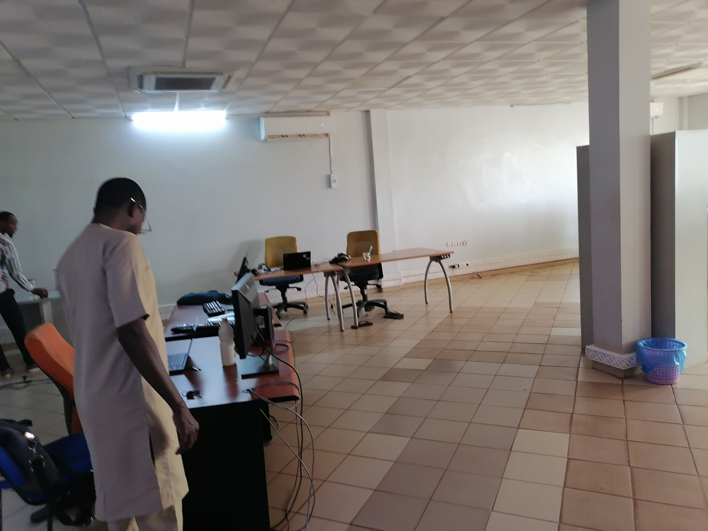
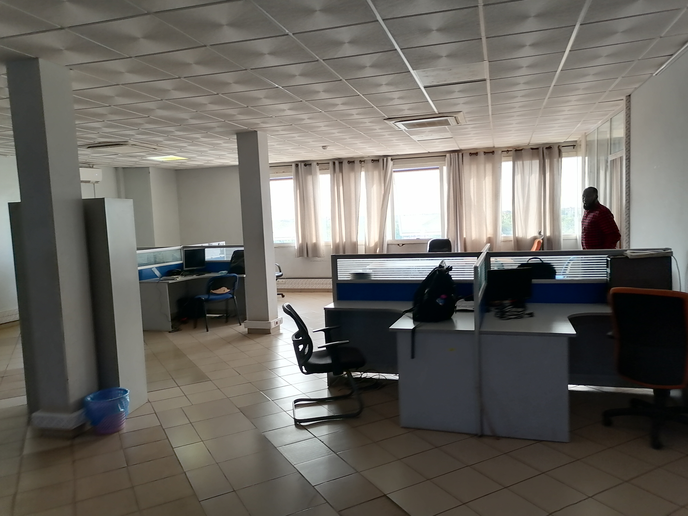
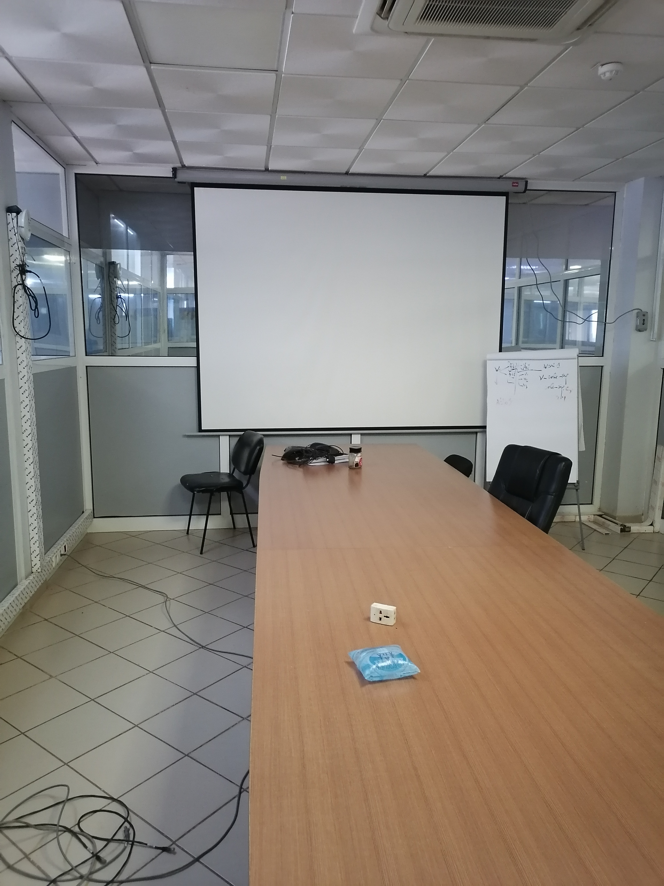
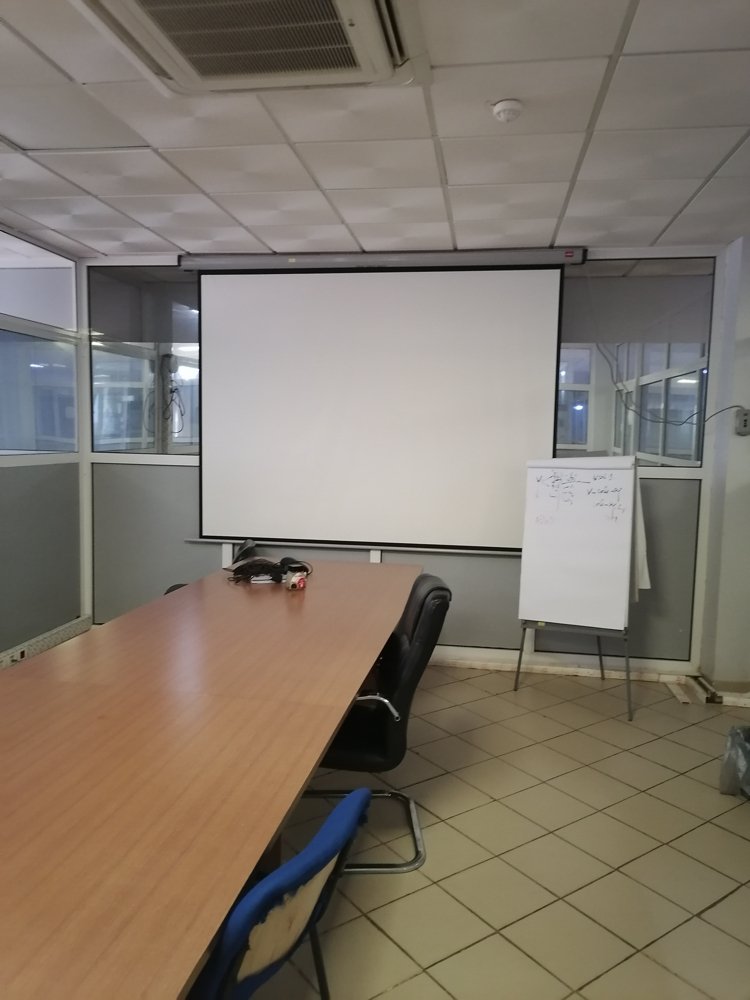
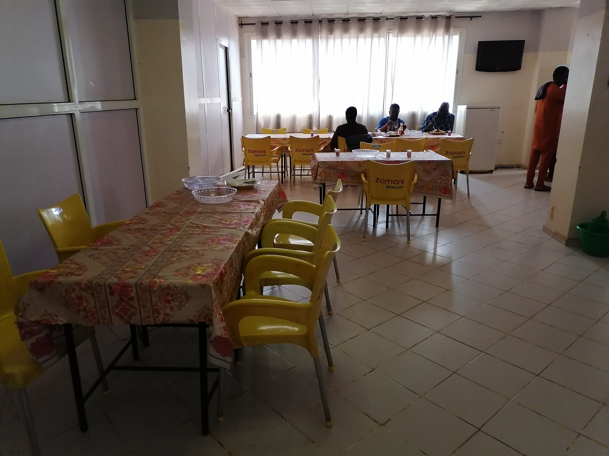
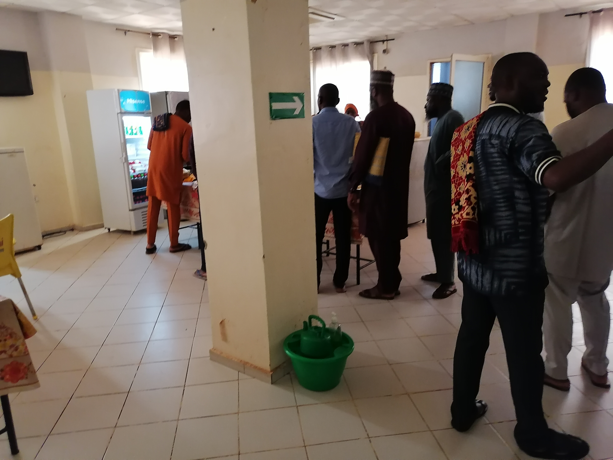
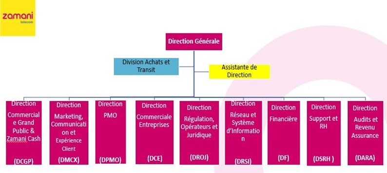

Je vous présente Zamani Télécom
L'administration de Zamani télécom est répartie dans deux grands batiments.
Le premier situé au quartier plateau est occupé par la direction générale et les services administratifs et financiers.
Le second situé au quartier Kalley-sud est occupé par les services techniques.

Façade de l'immeuble de la direction technique
Présentation de l'entreprise
La libéralisation du secteur des télécommunications amorcée par les autorités publiques du Niger depuis plus
d’une décennie a permis l’arrivée sur ce marché de plusieurs entreprises de télécoms opérant tant sur la téléphonie
mobile que sur le fixe et l’internet.
C’est dans ce contexte que le groupe France Télécom Orange a obtenu une licence d’opérateur global
fixe-mobile-Internet (1ere licence du genre a être octroyée) le 05 Décembre 2007.
Date de lancement officiel du réseau Orange Niger le 30 Juin 2008.
Après une décennie de travail, Orange télécom a décidé de se retirer du marché et a en conséquences cédé ses actions.
Deux investisseurs privés en l'occurence M.Mohamed Rissa, Président du groupe RIMBO et Moctar Thiam Président du
groupe envol afrique.
Ces derniers ont ainsi créer la société Zamani Com SAS qui a acquis la participation détenue par le groupe Orange
dans la société Orange Niger SA.
Zamani Télécom s'est depuis imposé comme l'un des pricipaux opérateur de télécommunications au Niger.
Le siège social de l'entreprise est à Niamey la capitale administrative.
La direction générale de l'entreprise est sise au quartier plateau dans un immeuble de 4 étages.
Elle compte aujourd'hui plus de 3 000 000 de clients et son capital social est aujourd'hui de 59 297 790 FCFA
(soit 90 393€).
En tant qu'opérateur global, l’entreprise propose des services Fixe, Mobile et Internet en Bussines To Bussiness
(BTB) et Bussiness to Costumer (BTC).
L’entreprise dispose également de sa propre infrastructure fibre optique pour la connectivité data internationale,
d’une boucle locale fibre optique à Niamey, et d’un réseau 4G Business entièrement dédié aux Entreprises.
Pour maintenir son leadership technologique, l’entreprise s’appuie sur des partenariats solides avec les plus
grands équipementiers mondiaux, sur ses 350 salariés hautement qualifiés, et sur un réseau de vente indirect de plus
de 22 000 points de vente répartis sur tout le territoire nigérien.
L'entreprise propose également Zamani cash (Anciennement Orange money) qui est un mini compte bancaire ouvert à partir
du numéro de téléphone et qui permet d'effectuer
un grand nombre de transactions financières comme le payement
des factures d'eau, d'électricité, de téléphone et de transfert d'argent entre particuliers.
Zamani télécom est le premier opérateur à avoir déployé dans le Pays la connexion 3G en 2011 et la 4G en 2020.
Environnement de Travail


Salle de Travail
La salle de Travail est un petit open-space avec une baie vitrés,
dans cette salle nous pouvons boire de
l'eau, du thé ou du café et avons accès à la climatisation.
Au fond isolé se trouve le bureau du chef.


Salle de Réunion
Il ya également une salle de réunion a coté.
Elle est constitué d'une table centrale et d'un tableau blanc
au fond utiliser principalement pour écrire ou vidéo-projeter les travaux des autres.


Caféteria
La caféteria se situe au rez-de-chaussée.
Elle est constitué de table avec des couverts et une file d'attente pour être servi par une dame de comptoir
(comme dans une caféteria d'école basiquement).
A noter que chaque déjeuner y est facturé 2000 FCFA (soit 3€).

Organigramme de l'entreprise
La structure de l'entreprise est représenté ci-dessus.
Mon stage c'est effectué au sein du Département Devops de la DRSI.
Contexte de Travail
Le département dans lequel je suis affecté est la DRSI. Au sein de cette Direction nous sommes chargés de
l'infrastructure réseau et du fonctionnement des services et applications proposés par l'entreprise.
Dans le batiment de la Direction nous disposons d'un accèss au réseau Internet protégé. Il nous est également
offert 25 000 FCFA (soit 38€) de Restauration et 25 000 FCFA de Crédit mobile par mois.